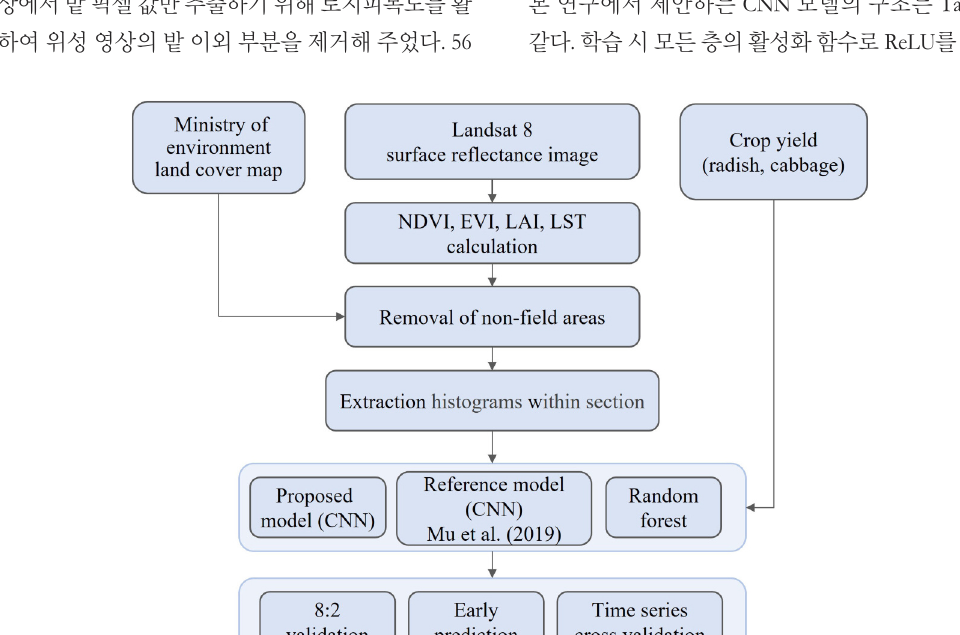

Predicting crop yield from seasonal satellite observations
This study investigates whether multi-temporal Landsat 8 imagery can support regional yield prediction for cabbage and radish. Satellite observations were combined with vegetation and thermal indicators to represent crop conditions during the growing season.
Seasonal satellite features for CNN-based yield prediction
The growing season was divided into June–July and August–September. Eleven Landsat-based variables were summarized as histograms and used to train a CNN, with a reference CNN and Random Forest included for comparison.
Satellite preprocessing
Non-field areas and cloud-contaminated observations were removed before extracting crop-related information from each administrative region.
Temporal feature construction
Observations were grouped into two seasonal periods and represented as 32-bin histograms for each input variable.
Yield modeling
A CNN was trained to predict crop yield and evaluated against a reference CNN and Random Forest baseline.

Crop-specific performance across the evaluated models
The proposed CNN achieved the strongest result for radish yield prediction. For cabbage, Random Forest outperformed the CNN, highlighting differences in model behavior across crop types.
Best result among evaluated models
Competitive, but below Random Forest
Random Forest achieved the strongest cabbage result (r = 0.684, RMSE = 1,163 kg/10a).